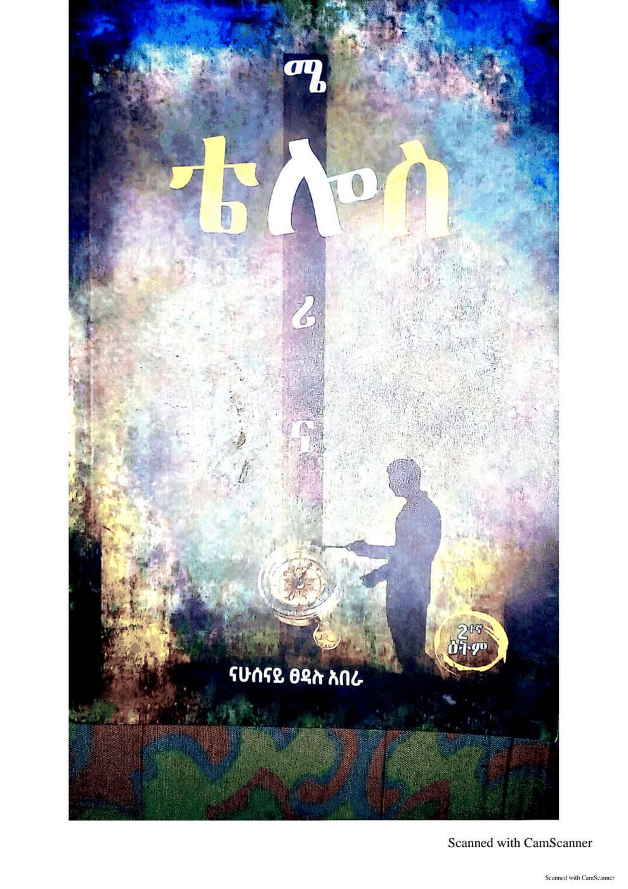
ሜሎሪና - ቴሎስ melorina - telos ናሁሰናይ ፀዳሉ አበራ, መስከረም በቀለ, ናይእግዚ ኅሩይ, ናሁሰናይ ፀዳሉ · 2021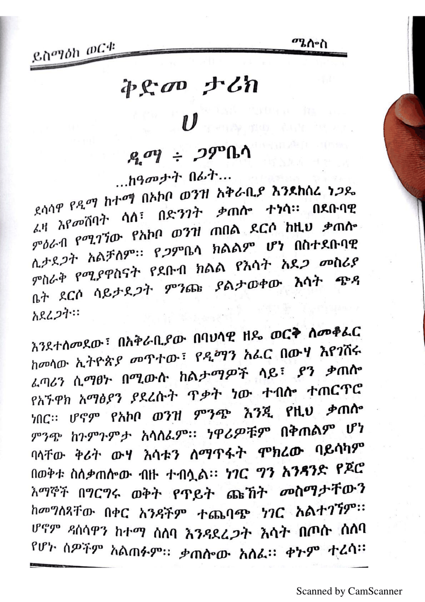
ሜሎስ melos ይስማዕከ ወርቁ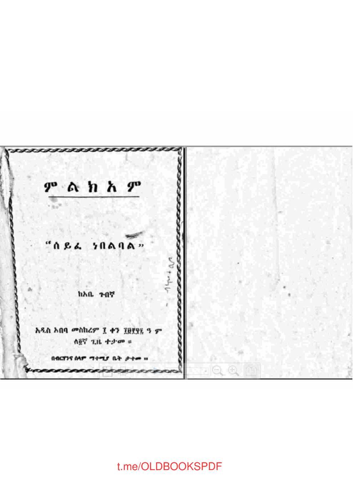
ምልክአም “ሰይፈ ነበልባል” melekam “seyfe nebelbal” አቤ ጉበኛ · 1963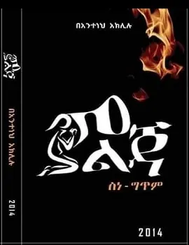
ምልጃ melja አንተነህ አክሉሉ · 2014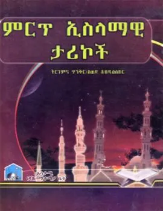
ምርጥ ኢስላማዊ ታሪኮች meret islamawi tarikoch አወድ አብዱልሰቡር · 2011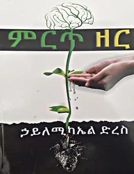
ምርጥ ዘር meret zer ኃይለሚካኤል ድረስ · 2013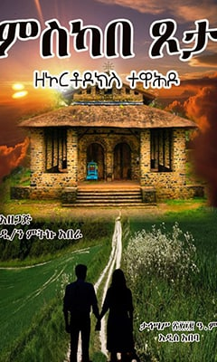
ምስካበ ጾታ meskabe tsota ዲያቆን ምትኩ አበራ · 2012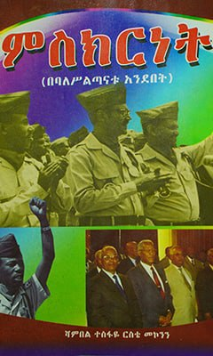
ምስክርነት mesekernet ሻምበል ተስፋዬ ርስቴ · 2015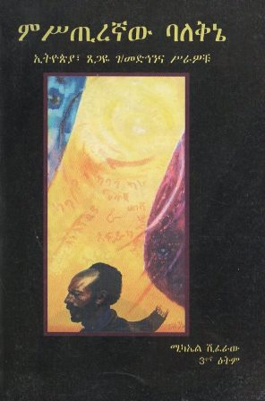
ምሥጢረኛው ባለቅኔ - ኢትዮጵያ ጸጋዬ ገ/መድኅንና ሥራዎቹ mestirenyaw baleqne - ityopya tsegaye ge/medehenna serawochu ሚካኤል ሽፈራው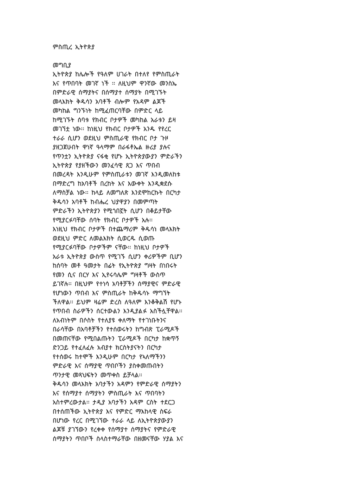
ምስጢረ ኢትዮጵያ mestire ityopya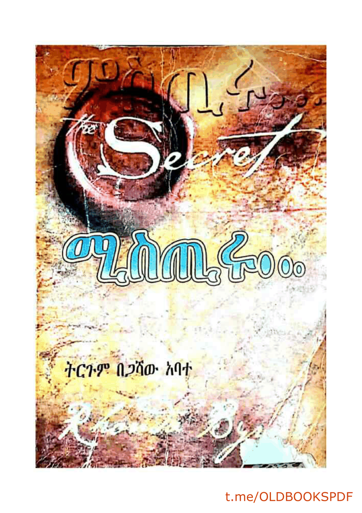
ምስጢሩ mestiru ሮንዳ ቤይርን, ጋሻው አባተ, በዕውቀቱ ታደሰ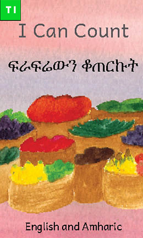
ምቑፃር ይኽእል እየ mequtsar yekeel eye Ready Set Go Books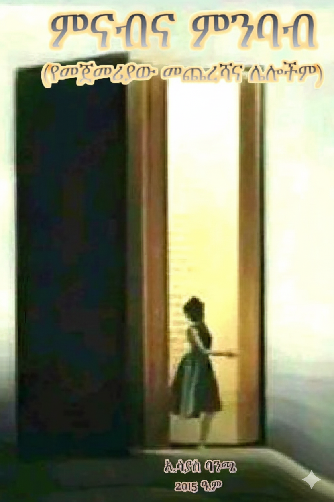
ምናብ እና ምንባብ menab ena menbab ኢሳያስ ባንጫ · 2023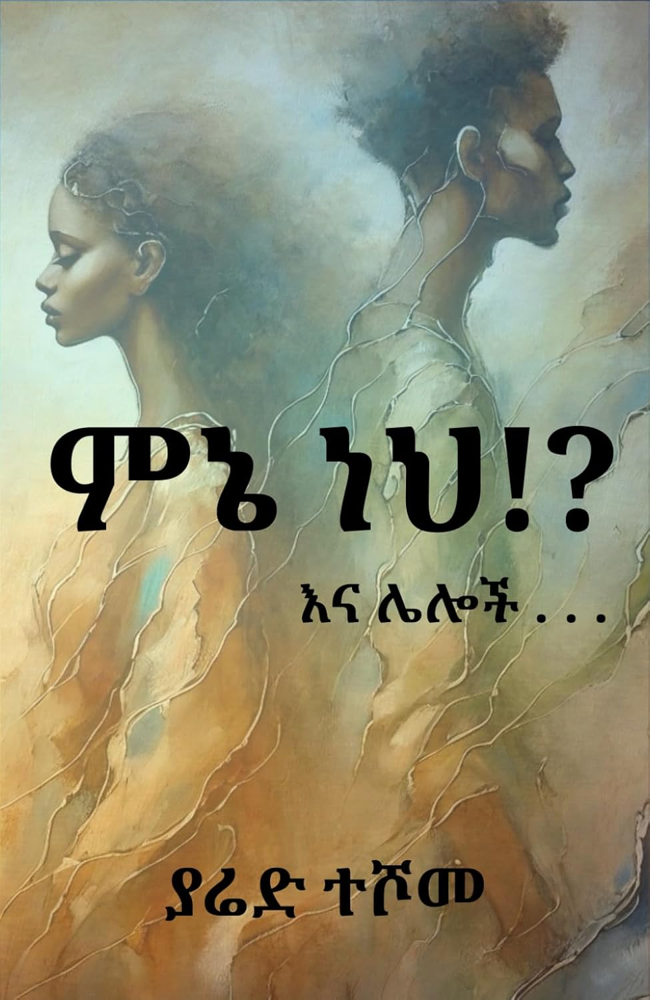
ምኔ ነህ Menie neh? Yared Teshome Zelelew · 2025